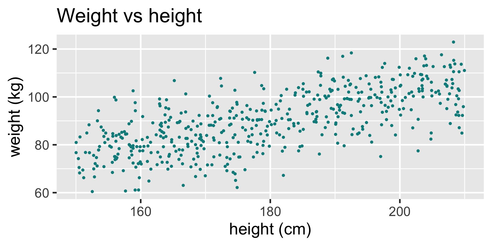
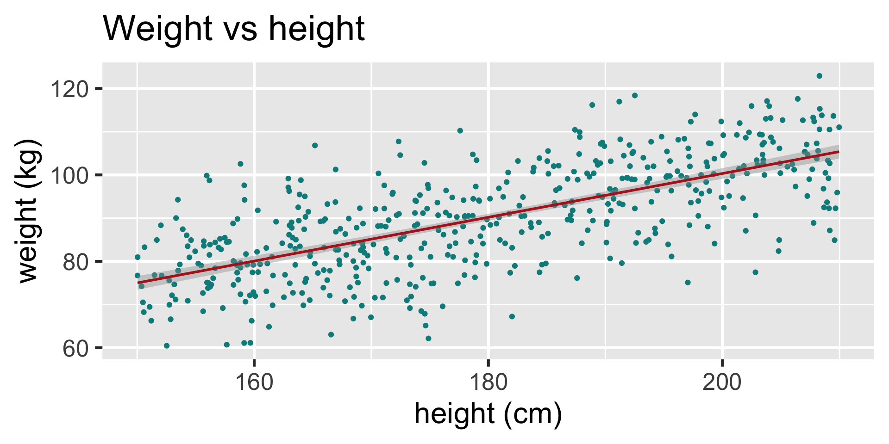
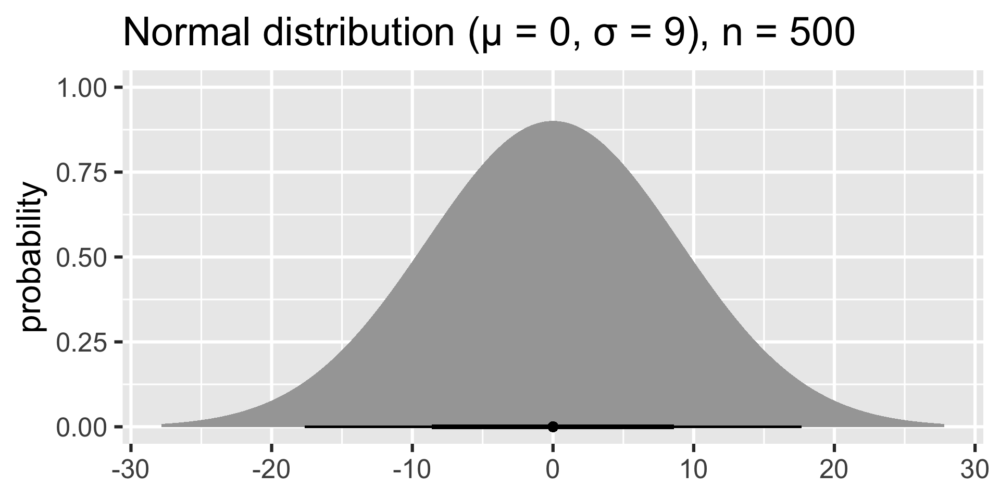
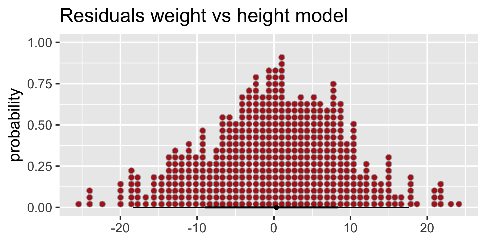
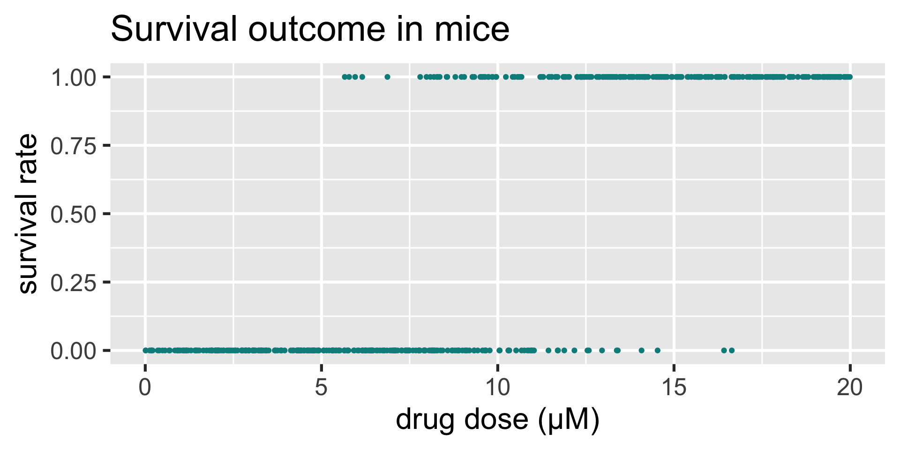
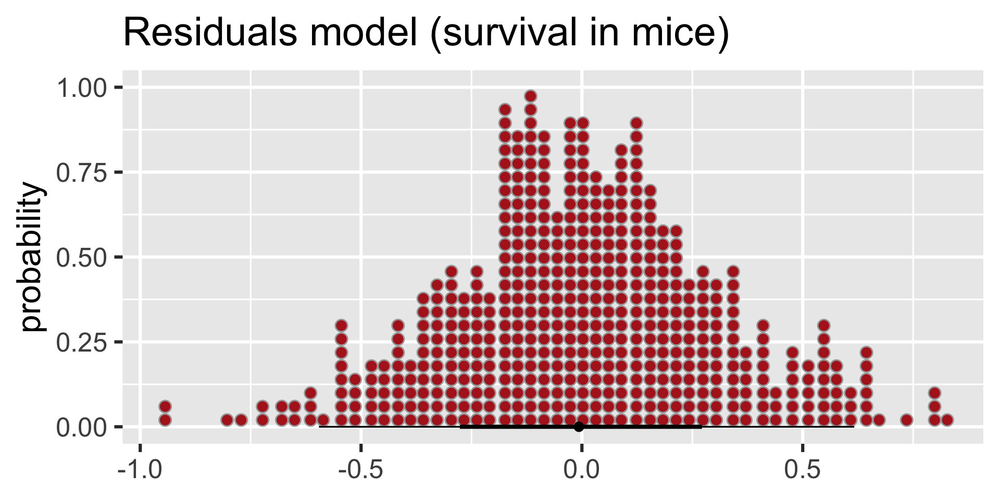
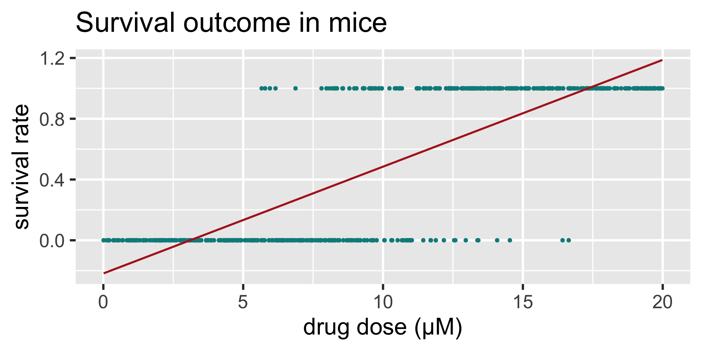

Bioinformatics Training Facility, 27 July 2022
(Well, a bit normal since we’re in-person…)
Martin van Rongen (mv372@cam.ac.uk)
Bioinformatics Training Facility
Rob Nicholls (support, course materials)
MRC Laboratory of Molecular Biology
We’re quite familiar with this by now…
… where our data
We know how to do this visually, and how to get the coefficients of the linear model.

Call:
lm(formula = y ~ x1, data = sim)
Residuals:
Min 1Q Median 3Q Max
-25.4516 -5.5648 0.3197 6.2430 24.1256
Coefficients:
Estimate Std. Error t value Pr(>|t|)
(Intercept) -0.98758 4.28894 -0.23 0.818
x1 0.50658 0.02376 21.32 <2e-16 ***
---
Signif. codes: 0 '***' 0.001 '**' 0.01 '*' 0.05 '.' 0.1 ' ' 1
Residual standard error: 9.057 on 498 degrees of freedom
Multiple R-squared: 0.4772, Adjusted R-squared: 0.4762
F-statistic: 454.6 on 1 and 498 DF, p-value: < 2.2e-16Estimate and Std.Error values (these determine the linear model)<2e-16 suggests that the slope of the model (\(\beta_1\)) is significantly different from zeroThree different things, but closely related:
Weight vs height:
Checks for equality of variance (homoscedasticity). Is the variance of the residuals correlated with the predictor variables?
Note: the horizontal line represents a cut-off at 4/n.
Weight vs height:
For the analysis to work (or be valid) we are assuming that the process that we’re studying - for a given value of the predictors - is approximated by a normal distribution.
We can visualise the residuals differently, as a probability density function:


Which is a pretty close approximation of a normal distribution with comparable parameters!
But what if our response variable is, for example, binary? Does this still hold true?
Here we have data from a fictional experiment (I don’t like hurting mice):
We could look at the assumptions:
The residuals do not look too bad and might be normally distributed (with some imagination):
But oh dear.
The computer happily lets us fit a linear model to these data:

Call:
lm(formula = y ~ x1, data = sim)
Residuals:
Min 1Q Median 3Q Max
-0.95129 -0.17115 -0.00679 0.18397 0.82046
Coefficients:
Estimate Std. Error t value Pr(>|t|)
(Intercept) -0.218317 0.027007 -8.084 4.8e-15 ***
x1 0.070295 0.002365 29.725 < 2e-16 ***
---
Signif. codes: 0 '***' 0.001 '**' 0.01 '*' 0.05 '.' 0.1 ' ' 1
Residual standard error: 0.3005 on 498 degrees of freedom
Multiple R-squared: 0.6395, Adjusted R-squared: 0.6388
F-statistic: 883.5 on 1 and 498 DF, p-value: < 2.2e-16Again,
Estimate and Std.Error values (these determine the linear model)<2e-16 for x1 suggests that the slope of the model (\(\beta_1\)) is significantly different from zeroSo, we have a statistically significant result and our model explains a lot more of the data than the global mean would do.
Hoorah! 😀
Why is this an issue?
We should make sure that our predictions are within an acceptable range: they can only be 0 (dead) or 1 (alive).
We can use generalised linear models to do this.
So, let’s take a step back.
Under the hood every linear regression model has three components:
We will see these components in practice below.
To understand the model a bit better, we’ll look at the equations (not much more than what we’ve covered during Core statistics!)
Starting with a simple linear regression model, this is often written in the form:
\[ Y = \beta_0 + \beta_1 x_1 + .. + \beta_p x_p + \varepsilon \] \[ \varepsilon \sim Normal(0, \sigma) \]
Since \(E(\varepsilon) = 0\), the estimated value of our response is equal to:
\[E(Y) = \beta_0 + \beta_1 x_1 + .. + \beta_p x_p\]
We can read this model as:
We can write this same equation differently, where it is focused on the distribution.
This notation generalises to other kinds of models more easily. This is exactly the same model as above:
\[Y \sim Normal(\mu, \sigma) \]
\[\mu = \beta_0 + \beta_1 x_1 + ... + \beta_p x_p \]
Where \(x_i\) are the predictors and \(\beta_i\) the coefficients that are to be estimated from the data (\(\sigma\) is also estimated from the data).
Now let’s finally consider our mouse survival example - which has a binary (yes/no, 0/1) outcome.
This kind of response is usually modeled using a binomial distribution. This distribution has two parameters:
\(n\) is assumed to be known, and for binary response variables it is implicit that \(n = 1\) (this special case of the binomial distribution is also called a bernoulli distribution).
With a binary response we can interpret the number of successes as the probability of a success.
Here is the model, using the same notation that we’re now getting used to:
\[Y \sim Binomial(n, p)\]
\[logit(p) = \beta_0 + \beta_1 x_1 + ... + \beta_p x_p\]
We have a new link function, which is the log-odds of the event:
\[logit(p) = log(\frac{p}{1 - p})\]
Again, this linearises the relationship between \(E(Y)\) (our \(p\) in this case) and the predictors.
This is generally where we let R do its job. However, it may be useful to know what R (or any other programming language) is doing for you. So I’ll show you the output of how we determine \(p\) and will share how we arrived at that conclusion via the slides.
We started with:
Our linear predictor equation \[logit(p) = \beta_0 + \beta_1 x_1 + ... + \beta_p x_p\]
and link function \[logit(p) = log(\frac{p}{1 - p})\]
We create a GLM using the binomial distribution and extract the coefficients (you’ll do this in the practical):
| coefficient | value |
|---|---|
| \(\beta_0\) | -6.5849807 |
| \(\beta_1\) | 0.650419 |
Which we can plug in, do some maths and end up with:
\[p = \frac{\exp{(-6.58 + 0.65 x_1)}}{1 + \exp{(-6.58 + 0.65 x_1)}}\]
We started with:
Our linear predictor equation \[logit(p) = \beta_0 + \beta_1 x_1 + ... + \beta_p x_p\]
and link function \[logit(p) = log(\frac{p}{1 - p})\]
We create a GLM using the binomial distribution and extract the coefficients (you’ll do this in the practical):
| coefficient | value |
|---|---|
| \(\beta_0\) | -6.5849807 |
| \(\beta_1\) | 0.650419 |
Which means that we can write the linear predictor equation as follows:
\[logit(p) = -6.58 + 0.65 x_1\]
Not too bad, eh? 😀
But we still have to deal with our link function. Combining the two equations gives us:
\[log(\frac{p}{1 - p}) = -6.58 + 0.65 x_1\]
To get our \(p\) (the probability of a mouse surviving our treatment), we need to exponentiate our equation:
\[\frac{p}{1 - p} = \exp{(-6.58 + 0.65 x_1)}\]
leading to…
\[p = \frac{\exp{(-6.58 + 0.65 x_1)}}{1 + \exp{(-6.58 + 0.65 x_1)}}\]
Having an equation for \(p\) is helpful, but we prefer to let R do the work. So we just give it the data to add to the model and plot the response. You’ll learn how to do this in the practical.
Here we plot three things:
data)linear)binomial)We can see that the binomial model is pretty helpful: it’s in a range of 0 and 1 and symmetric around the center.
The linear model on the other hand just shows how rubbish that approach is… 😮
And, as Jeremy Clarkson would say, on that bombshell it’s time to say…
☕
^ coffee cup not to scale.